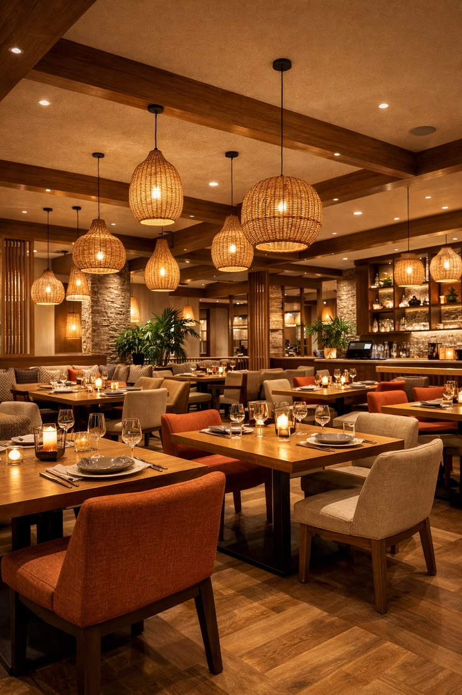

Our philosophy
Cook thoughtfully, serve generously, and make every guest feel at home. Our menu is designed to celebrate the richness and variety of Indian cuisine.
Luxury within every bite
Midnight Bistro brings the warmth of Indian hospitality to an intimate, modern dining experience—premium in care, welcoming in spirit.

Our story begins with a simple belief: a memorable meal is about more than what is on the plate. It is the comfort of being welcomed, the care behind every ingredient, and the pleasure of sharing good food.
Midnight Bistro is being built around that idea, blending familiar Indian flavours with the ease of a contemporary bistro.
Cook thoughtfully, serve generously, and make every guest feel at home. Our menu is designed to celebrate the richness and variety of Indian cuisine.
We aim to use carefully selected ingredients and prepare each dish with attention. Supplier and sourcing details will be shared once confirmed by the restaurant.
Warm light, considered details, and attentive hospitality set the tone for relaxed dinners, celebrations, and everyday occasions.
Chef introductions and personal recommendations will be shared once the restaurant has confirmed the team and its signature dishes.